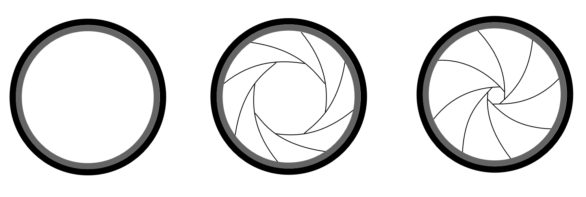
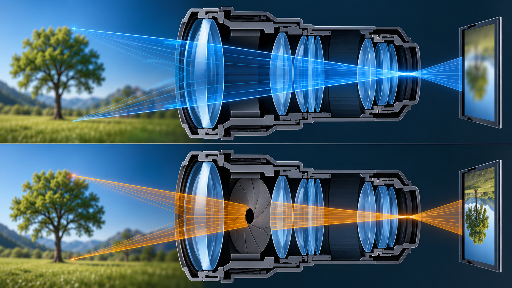
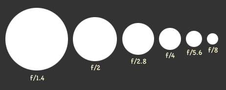
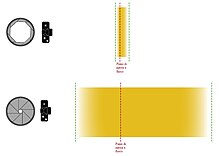
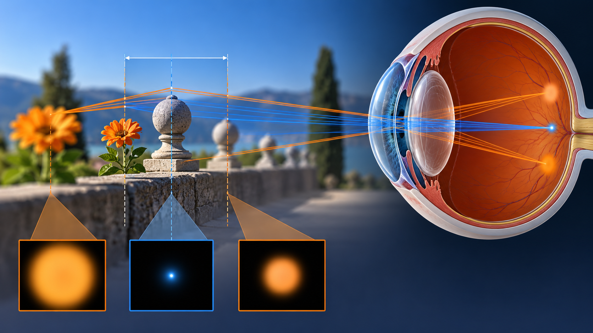
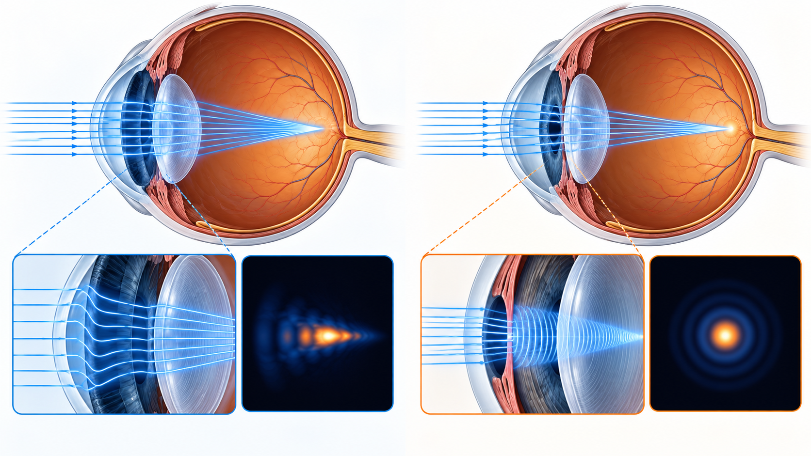

Obiettivi
- Distinguere diaframma, pupilla d’ingresso e numero f.
- Prevedere come l’apertura modifica la quantità di luce.
- Distinguere profondità di campo e profondità di fuoco.
- Spiegare il compromesso fra sfocatura, aberrazioni e diffrazione.
Che cosa fa un diaframma?
Livello intuitivo: Il diaframma è una finestra regolabile nel sistema ottico. Aprendola passano più raggi e più luce. Chiudendola selezioniamo un fascio più stretto: molte distanze possono apparire sufficientemente nitide, ma l’immagine diventa meno luminosa.
Per essere maggiormente rigorosi: Il diaframma di apertura limita il fascio proveniente da un punto assiale. La sua immagine vista attraverso gli elementi anteriori è la pupilla d’ingresso. Il diametro di quest’ultima può differire da quello fisico del foro. Un diaframma di campo limita invece l’estensione del campo visibile.


Apertura e numero f
Per un obiettivo convergente in aria usiamo , con la convenzione della lezione 02.
Cosa Vuol Dire?
Livello intuitivo: Il numero f confronta la focale con il diametro della pupilla d’ingresso. A focale fissa, un numero più grande indica un’apertura più piccola. Con una focale di e un’apertura di abbiamo , cioè f/2.
Per essere maggiormente rigorosi: è adimensionale. e devono essere nella stessa unità. Per un oggetto lontano, a parità di condizioni, l’illuminamento nel piano immagine varia approssimativamente come , trascurando perdite e vignettatura. Per immagini a forte ingrandimento occorre considerare il numero f effettivo.
Che cosa significa uno stop?
Livello intuitivo: Uno stop di chiusura dimezza idealmente la luce. Passare da f/2 a f/4 corrisponde a due stop: il diametro si dimezza e l’area diventa un quarto.
Per essere maggiormente rigorosi: La sequenza , , , , è un arrotondamento di valori che crescono di un fattore . L’esposizione dipende anche dal tempo e dalla trasmissione, che il solo numero f non descrive.

Profondità di campo
Perché più distanze possono sembrare a fuoco?
Livello intuitivo: Solo una distanza è messa a fuoco esattamente. Gli oggetti un po’ davanti o dietro formano piccole macchie. Se queste sono abbastanza piccole da non distinguerle, giudichiamo l’immagine nitida.
Per essere maggiormente rigorosi: La profondità di campo è un intervallo nello spazio oggetto definito da una soglia sul cerchio di confusione. Dipende da apertura, ingrandimento, distanza di messa a fuoco, focale, formato e criterio di osservazione. La soglia dipende anche da ingrandimento della stampa o dello schermo e distanza di visione.

Profondità di campo e profondità di fuoco
Livello intuitivo: La profondità di campo riguarda dove possono stare gli oggetti. La profondità di fuoco riguarda quanto possiamo spostare il piano che riceve l’immagine mantenendo una nitidezza accettabile.
Per essere maggiormente rigorosi: Le due tolleranze appartengono a spazi diversi e non hanno necessariamente la stessa estensione. La regola “un terzo davanti e due terzi dietro” non è generale. La distribuzione varia con geometria e distanza, diventando quasi simmetrica nelle riprese ravvicinate.

Diaframma e aberrazioni
Livello intuitivo: A grande apertura partecipano anche i raggi che attraversano le zone periferiche. Se queste non focalizzano come il centro, la macchia di un punto si allarga. Chiudendo il diaframma escludiamo parte di quei raggi e possiamo migliorare la nitidezza.
Per essere maggiormente rigorosi: Diaframmare riduce spesso aberrazione sferica e coma, ma l’effetto dipende da progetto, campo e posizione del diaframma. Non elimina automaticamente distorsione, curvatura di campo o dispersione. Non esiste una regola universale che imponga sempre due o tre stop di chiusura.
Il compromesso con la diffrazione
Livello intuitivo: Chiudere aiuta fino a un certo punto. Dopo, l’allargamento diffrattivo può superare il vantaggio ottenuto escludendo i raggi più aberrati.
Per essere maggiormente rigorosi: La migliore apertura dipende dal dettaglio e dalle condizioni di osservazione. Una pupilla piccola può nascondere parte dell’errore refrattivo, ma non lo annulla. Meno aberrazione geometrica non significa automaticamente una PSF più stretta se la diffrazione è dominante.
Perché non chiudere il diaframma al massimo?
Livello intuitivo: Un’apertura più piccola esclude molti raggi che producono sfocatura e aberrazioni. Se però diventa troppo piccola, la luce si distribuisce in una macchia più larga per diffrazione.
Per essere maggiormente rigorosi: Per un’apertura circolare ideale, monocromatica e senza aberrazioni, in aria il raggio del primo minimo nel piano focale è circa . Aumentare allarga quindi la figura di Airy. Il compromesso migliore dipende dal sistema e dal dettaglio da osservare.

La pupilla nell’occhio
Livello intuitivo: La pupilla svolge un ruolo simile alla finestra di una fotocamera. Una pupilla più piccola può rendere meno evidente la sfocatura, ma lascia entrare meno luce.
Per essere maggiormente rigorosi: La pupilla d’ingresso è l’immagine dell’apertura iridea attraverso la cornea. Il diametro varia con illuminazione, accomodazione e controllo autonomico. Una sua riduzione può aumentare la profondità di fuoco e diminuire molte aberrazioni, fino al limite imposto dalla diffrazione.